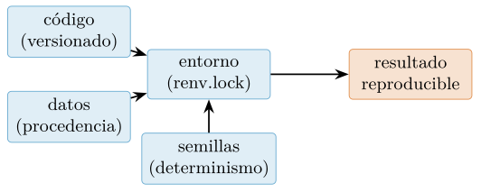
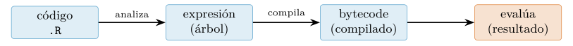
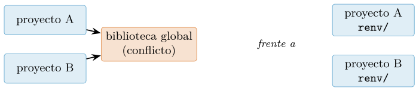
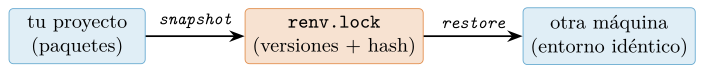
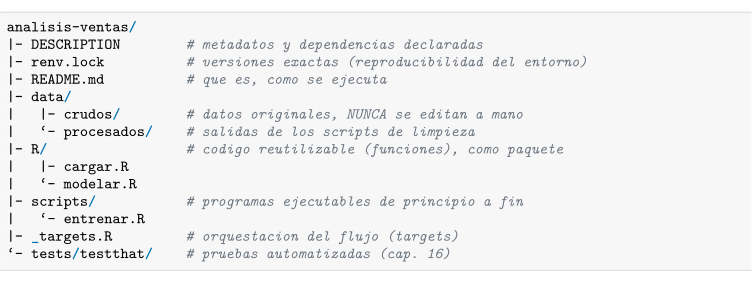
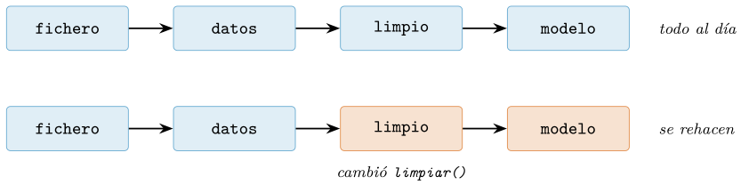
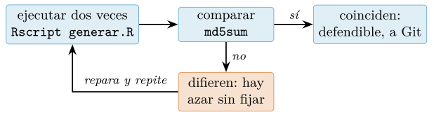

Capítulo 1. Entorno de trabajo y flujo reproducible
▶ Ejecutar este capítulo en Binder
La primera vez que se abre, Binder construye el entorno en la nube (unos 10-20 min); verás una pantalla de progreso. Después queda en caché y abre en segundos. Si parece que no responde, espera a que termine de construirse o vuelve a intentarlo.
Casi todo curso de programación comienza por la sintaxis: se enseña a escribir un bucle antes de mostrar dónde vive, cómo se ejecuta y cómo se comparte. En ciencia de datos conviene el orden inverso, porque el producto no es un programa que corre una vez, sino un resultado que otra persona debe poder reproducir: la misma entrada, el mismo código y el mismo entorno han de dar la misma salida. Este capítulo construye ese andamiaje antes de escribir una línea de análisis, y enlaza con el resto del libro: la reproducibilidad que aquí se plantea reaparece en el registro de cifras (cap. 10), en la estadística honesta (cap. 11) y en la ingeniería del proyecto (cap. 16). No es un capítulo de «puesta a punto» que se pueda saltar: es la base metodológica sobre la que se sostiene todo lo demás.
Qué significa «programar para datos»
Programar para la ciencia de datos es escribir código cuyo objetivo no es principalmente funcionar, sino convencer. Un guion que ajusta un modelo e imprime un acierto de \(0{,}92\) no vale nada si nadie —ni tú dentro de seis meses— puede volver a obtener ese número. La diferencia entre un análisis y una anécdota es la reproducibilidad, y esa diferencia no es un matiz académico: es lo que separa un resultado defendible de una impresión personal.
La crisis de reproducibilidad
La preocupación por la reproducibilidad no es una manía de programadores meticulosos: es una respuesta a un problema documentado a gran escala. En una encuesta a más de mil quinientos científicos, más del 70 % declaró haber sido incapaz de reproducir los experimentos de otro investigador, y más de la mitad no pudo reproducir los suyos propios (Baker 2016). En el terreno computacional —donde, en teoría, todo debería ser perfectamente repetible, porque un ordenador hace siempre lo mismo— la situación no es mejor: Peng (2011) argumenta que la reproducibilidad computacional debería ser el estándar mínimo verificable de la ciencia, y sin embargo rara vez se cumple. La causa no suele ser el fraude, sino la pérdida de contexto: versiones de paquetes que cambian, semillas aleatorias no fijadas, pasos manuales no registrados, datos que se editaron «a mano» una tarde y nadie anotó.
El caso de los cuadernos de análisis es especialmente revelador. En un estudio de más de un millón de notebooks publicados en repositorios públicos, Pimentel et al. (2019) intentaron ejecutarlos de principio a fin en un entorno limpio: solo una pequeña fracción se ejecutó sin errores, y de esos, una fracción aún menor reprodujo los resultados originales. La lección es contundente: publicar el código no garantiza la reproducibilidad; hace falta una disciplina explícita. El estudio se hizo con cuadernos de Python, pero su moraleja no depende del lenguaje: un cuaderno de R con estado oculto falla igual. Este libro adopta esa disciplina desde la primera página.
Conviene nombrar los modos de fallo concretos, porque conocerlos es el primer paso para evitarlos. Los más frecuentes en un trabajo de datos son cinco. Versiones sin fijar: el código se escribió con una versión de un paquete y se ejecuta con otra que cambió un comportamiento por defecto, de modo que el resultado varía sin que nadie haya tocado una línea. Pasos manuales no registrados: alguien «arregló» un dato a mano en una hoja de cálculo, o ejecutó unas líneas en cierto orden, y ese paso no queda en ningún sitio. Semillas no fijadas: un proceso aleatorio da números distintos cada vez, y con ellos cifras distintas. Datos crudos perdidos o modificados: se editó el fichero original en lugar de trabajar sobre una copia, y ya no hay forma de volver al punto de partida. Estado oculto de la sesión: el resultado en pantalla lo produjo una versión anterior de una línea que después se cambió. Los cinco son evitables con disciplina, y los cinco reaparecen, ya resueltos, a lo largo del libro; la tabla 1.1 los recoge con el pilar que los desactiva.
| Modo de fallo | Síntoma | Antídoto |
|---|---|---|
| Versiones sin fijar | el resultado cambia sin tocar el código | lockfile (renv) |
| Pasos manuales | un arreglo «a mano» sin registrar | todo en código |
| Semilla no fijada | números distintos cada vez | set.seed |
| Crudos modificados | no hay vuelta al punto de partida | crudos inmutables |
| Estado oculto | la pantalla no refleja el código | sesión limpia |
Los cuatro pilares
Reproducibilidad significa que cuatro cosas están fijadas y registradas, tal como resume la figura 1.1:
El código, versionado (§1.7), de modo que se sepa exactamente qué instrucciones se ejecutaron.
Los datos, con su procedencia y, a ser posible, una copia inmutable o un identificador de versión.
El entorno: qué versión de R y de cada paquete se usó (§1.4).
dplyr1.0 ydplyr1.2 no siempre dan el mismo resultado.La aleatoriedad, mediante semillas fijas (§1.10), para que una partición o una inicialización aleatoria sean repetibles.

Estos cuatro pilares no son una aspiración vaga; existen guías operativas que los concretan en reglas comprobables. Sandve et al. (2013) proponen «diez reglas simples» —desde registrar cómo se produjo cada resultado hasta versionar todo el código personalizado— que se pueden seguir literalmente. Wilson et al. (2017) las condensan en «prácticas suficientemente buenas» para quien no es ingeniero de software pero sí necesita que su ciencia se sostenga. La colección abierta The Turing Way (The Turing Way Community 2022) reúne y actualiza este cuerpo de conocimiento y es, hoy, la referencia práctica más completa. La actitud, no obstante, se adquiere desde el primer día con una regla mínima: nunca teclees un número a mano si puedes calcularlo, y nunca ejecutes código que no sepas volver a ejecutar igual.
Reproducible, replicable, robusto
Conviene distinguir tres términos que se confunden a menudo y que marcan niveles de exigencia crecientes. Un resultado es reproducible cuando, con los mismos datos y el mismo código, cualquiera obtiene el mismo resultado; es el mínimo verificable, y el objetivo directo de este capítulo. Es replicable cuando un estudio nuevo, con datos nuevos recogidos de forma independiente, llega a la misma conclusión; esto ya no depende solo del código, sino de que el fenómeno sea real. Y es robusto cuando la conclusión se sostiene aunque se analice con métodos distintos. La reproducibilidad no garantiza que una conclusión sea cierta —un análisis reproducible puede estar reproduciblemente equivocado—, pero es la condición previa de todo lo demás: sin ella no se puede siquiera empezar a discutir si un resultado replica o es robusto. Por eso Peng (2011) la sitúa como el estándar mínimo, no como la meta final. Este libro se ocupa sobre todo de la primera —hacer que tus resultados sean reproducibles— y, en el capítulo 11, de las herramientas estadísticas que ayudan a juzgar si además son robustos.
Un ejemplo fija los tres niveles con el caso de este libro. Afirmas que, en el catálogo de música, las pistas más enérgicas suenan más fuerte. El resultado es reproducible si cualquiera, con tu CSV y tu guion, obtiene la misma correlación hasta el último decimal. Es replicable si otro equipo, descargando otro catálogo —otro año, otra plataforma— y escribiendo su propio análisis, concluye también que energía y sonoridad van de la mano. Y es robusto si la conclusión aguanta cambios de método: correlación de Spearman en vez de Pearson, quitar el 1 % de pistas extremas, controlar por género. Cada nivel protege de un fallo distinto: el primero, de no poder ni comprobar; el segundo, de que tu muestra fuera peculiar; el tercero, de que la conclusión fuera un artefacto de la técnica elegida.
Datos que se puedan encontrar y reutilizar: los principios FAIR
La reproducibilidad del código se complementa con la buena gestión de los datos. Los principios FAIR (Wilkinson et al. 2016) —del inglés Findable, Accessible, Interoperable, Reusable— establecen que los datos deben ser localizables (con un identificador persistente), accesibles (con un protocolo claro), interoperables (en formatos y vocabularios estándar) y reutilizables (con licencia y procedencia explícitas). En la práctica de este libro, FAIR se traduce en decisiones concretas: descargar los datos de una fuente canónica y citarla, guardarlos en formatos abiertos (cap. 5), y anotar la fecha y la versión de descarga para poder referirse a exactamente esos datos. Un análisis reproducible sobre datos que ya no se pueden encontrar es media reproducibilidad.
Conviene desglosar las cuatro letras, porque cada una se traduce en un gesto concreto. Localizable significa que el dato tiene un identificador estable —un DOI, una URL canónica— y no un «me lo pasó un compañero». Accesible, que se puede recuperar con un protocolo claro y abierto, no tras un formulario que un día desaparece. Interoperable, que vive en un formato estándar (CSV, Parquet, JSON) legible por cualquier herramienta, no en el binario propietario de un programa concreto. Y reutilizable, que lleva su licencia y su procedencia, de modo que quien lo encuentre sepa qué puede hacer con él. FAIR no es un ideal abstracto: es la diferencia entre un dato que sobrevive a su autor y uno que muere con el portátil donde se guardó.
Las tres clases de dato (anticipo)
Adelantamos aquí la disciplina que formalizaremos en el capítulo 10. Todo número que escribas en un informe pertenece a una de tres clases, y la clase se hace visible al lector: es medido (lo calculó tu código, es reproducible), sintético (lo generaste a propósito para ilustrar) o citado (lo tomaste de una fuente, con su referencia). Confundir las clases —presentar como medición lo que es una cita, o como dato general lo que es un artefacto de tu muestra— es la falta más grave en un trabajo de datos. La reproducibilidad es, precisamente, lo que permite defender que un número es de la primera clase.
Este volumen añade un matiz propio de R que conviene fijar ya: comparte con el de Python el catálogo de música, que es el mismo fichero, de modo que las cifras deterministas —una media, una correlación— coinciden entre los dos libros. Pero el generador de números aleatorios de R no es el de Python: toda cifra que nazca de un sorteo —una muestra, una partición, un intervalo por bootstrap— se regenera aquí y da un valor propio (§1.10). Se conserva la estructura y la receta; no el número exacto.
Diez reglas para no engañarse
Conviene bajar los pilares a reglas accionables. Sandve et al. (2013) proponen diez, ordenadas de lo más básico a lo más exigente, que sirven como lista de comprobación de cualquier análisis:
Registra cómo se produjo cada resultado. Anota el comando o el guion exacto que generó cada número y cada figura.
Evita los pasos manuales de manipulación de datos. Todo lo que se hace «a mano» en una hoja de cálculo es irreproducible; automatízalo.
Archiva las versiones exactas de los programas externos usados (el pilar del entorno, §1.4).
Versiona todo el código propio (§1.7).
Guarda los resultados intermedios en formatos estándar, para poder retomar el análisis desde cualquier punto.
Anota las semillas de cualquier proceso aleatorio (§1.10).
Conserva los datos crudos detrás de cada gráfica, no solo la imagen final.
Genera salidas jerárquicas, que permitan inspeccionar el detalle creciente de un resultado.
Conecta las afirmaciones del texto con los resultados que las sostienen (la esencia de «medir, no proclamar», cap. 10).
Da acceso público a los guiones, las ejecuciones y los resultados.
Ninguna es difícil por separado; la disciplina está en seguirlas siempre. Este libro las encarna: cada capítulo tiene su código en src/, cada cifra sale de él, y cada figura se regenera con un comando.
El intérprete de R y su ecosistema
Un lenguaje interpretado
R es un lenguaje interpretado: no se compila a un ejecutable de una vez, sino que un programa —el intérprete, R— lee tu código, lo analiza y lo evalúa expresión a expresión. La implementación de referencia es GNU R, mantenida por el R Core Team, y es la que casi todo el mundo usa. Como todo lenguaje interpretado, R paga un coste por cada operación evaluada, y de ahí una consecuencia que marcará la Parte III: un bucle de R sobre millones de números es lento comparado con la misma operación vectorizada, que delega el cálculo a código C o Fortran compilado (cap. 7). Conviene saber, desde el principio, qué versión tenemos, porque el comportamiento cambia entre versiones:
R.version.string # "R version 4.6.1 (2026-06-24)"
R.version$platform # "x86_64-pc-linux-gnu"
RNGkind()[1] # "Mersenne-Twister" (el generador por defecto)Del código fuente a la evaluación
Entender, aunque sea a grandes rasgos, qué hace el intérprete evita muchos malentendidos posteriores. Cuando evalúas una expresión, R primero la analiza (parse) y la convierte en un árbol de expresiones —una estructura que el propio lenguaje puede inspeccionar y manipular, algo que aprovecharemos en el cap. 6—, y después la evalúa. Desde R 3.4 el intérprete compila a bytecode las funciones sobre la marcha (un compilador JIT), y todos los paquetes base vienen ya compilados; ese bytecode intermedio, más rápido de ejecutar que el árbol, es análogo al que usan otros lenguajes interpretados. La figura 1.2 lo esquematiza.

Esta arquitectura explica dos hechos importantes. El primero, ya mencionado: la interpretación tiene un coste por operación, que la vectorización de la Parte III elude delegando los bucles a código compilado. El segundo: como R y sus paquetes son multiplataforma, el mismo .R corre igual en Linux, macOS y Windows —siempre que los paquetes estén disponibles—, la portabilidad que hace de R un lenguaje cómodo para colaborar.
Por qué R en ciencia de datos
A diferencia de casi todos los lenguajes de programación, R nació para el análisis de datos: es la reencarnación libre del lenguaje S, creado por John Chambers en los Laboratorios Bell para «convertir ideas en software, con rapidez y fidelidad» (Chambers 2008). Esa herencia se nota en todo: el vector es el tipo básico (no hay escalares, cap. 2), los valores ausentes son ciudadanos de primera clase, la interfaz de fórmula (y ~ x) y la gramática de gráficos (cap. 12) son nativas, y los contrastes estadísticos vienen en la instalación base (cap. 11). Donde Python tuvo que añadir una capa numérica y otra estadística, R las trae de fábrica. Su ecosistema —CRAN, el archivo con más de veinte mil paquetes, y el tidyverse, la colección coherente de Hadley Wickham y colaboradores (Wickham et al. 2019)— crece sobre esa base común. Aprender R no es aprender paquetes sueltos, sino un lenguaje diseñado, desde el primer día, para pensar con datos.
Breve historia del R científico
Merece la pena conocer, en pocas líneas, cómo se formó este ecosistema, porque explica su forma actual. En los años setenta, John Chambers y sus colegas de Bell Labs crearon S, un lenguaje para el análisis estadístico interactivo. A comienzos de los noventa, Ross Ihaka y Robert Gentleman, en la Universidad de Auckland, escribieron una implementación libre e independiente inspirada en S y en el lenguaje funcional Scheme; la presentaron formalmente en 1996 (Ihaka y Gentleman 1996) y la llamaron R, en parte por sus iniciales y en parte como guiño a S. En 1997 se constituyó el R Core Team y nació CRAN —Comprehensive R Archive Network—, y en el año 2000 llegó R 1.0.0. Sobre esa base creció un ecosistema estadístico enorme, y a partir de 2016 el tidyverse (Wickham et al. 2019) le dio una gramática común para la manipulación (dplyr, cap. 8), la visualización (ggplot2, cap. 12) y el modelado (tidymodels, cap. 14). La característica de fondo, como en Python, es la interoperabilidad: las piezas comparten la representación de los datos —el data frame— y encajan sin fricción.
Dos episodios de esa historia explican rasgos que aún se notan. El primero: durante los noventa el S «oficial» era un producto comercial (S-PLUS), y R, su reimplementación libre, empezó como proyecto académico marginal; que hoy R sea el estándar y S-PLUS una pieza de museo es uno de los primeros triunfos claros del software libre en la ciencia, y la razón de que casi toda la estadística académica publique sus métodos como paquetes de CRAN. El segundo: en 2001 nació Bioconductor, el repositorio hermano especializado en bioinformática, con una política pionera de revisión y de integración continua que anticipó lo que hoy llamamos ingeniería de software científico. La tabla 1.2 ordena los hitos.
| Año | Hito | Qué aportó |
|---|---|---|
| 1976 | S (Bell Labs) | el lenguaje estadístico interactivo original |
| 1993 | R (Auckland) | reimplementación libre de S, anunciada en listas |
| 1995 | licencia GPL | R se vuelve software libre formalmente |
| 1997 | CRAN + R Core | archivo central de paquetes y equipo estable |
| 2000 | R 1.0.0 | primera versión considerada estable |
| 2001 | Bioconductor | repositorio bioinformático con revisión e IC |
| 2011 | RStudio IDE | el entorno que popularizó R fuera de la academia |
| 2012 | knitr, Shiny | informes reproducibles y aplicaciones web en R |
| 2016 | tidyverse | gramática coherente de manipulación y gráficos |
| 2020 | R 4.0 | stringsAsFactors=FALSE: rompe con un legado |
| 2022 | Posit, Quarto | la empresa se reorienta y el cuaderno se hace políglota |
| 2023 | S7 | sistema de objetos que unifica S3 y S4 (cap. 6) |
Un último rasgo del ecosistema no es técnico sino humano: la comunidad. CRAN mantiene Task Views, páginas curadas que catalogan los paquetes de un dominio (series temporales, ecología, farmacocinética) y ahorran semanas de búsqueda; rOpenSci revisa por pares paquetes de ciencia abierta; R-Ladies y las conferencias useR! y posit::conf sostienen una red de usuarios inusualmente dispuesta a ayudar. Para quien empieza, esto tiene una consecuencia práctica: casi cualquier problema estadístico que encuentres ya tiene un paquete escrito por la persona que publicó el método —una inmediatez entre literatura y software que pocas comunidades igualan—.
Paquetes: instalar, cargar y el operador ::
El valor de R está en sus paquetes, y conviene distinguir dos gestos que los principiantes confunden. install.packages("dplyr") instala el paquete en el disco: se hace una vez (o se delega en renv). library(dplyr) lo carga en la sesión actual: se hace en cada guion que lo use, y pone sus funciones a mano. Instalar es comprar la herramienta; cargar es sacarla del cajón.
install.packages("dplyr") # una vez: descarga e instala en el disco
library(dplyr) # en cada sesion: carga sus funciones
dplyr::filter # el operador :: usa una funcion SIN cargar el paqueteEl operador :: merece un apunte: paquete::funcion llama a una función indicando explícitamente de qué paquete es, sin necesidad de library(). Tiene dos virtudes: evita la ambigüedad cuando dos paquetes definen una función con el mismo nombre (dplyr::filter frente a stats::filter), y documenta en el propio código de dónde sale cada cosa. En guiones de producción, ser explícito con :: en las llamadas menos habituales es una cortesía con quien lea el código después.
Versiones de R y su cadencia
R publica una versión mayor nueva cada primavera, y entre medias, versiones de mantenimiento (patch). La tabla 1.3 resume las relevantes en el momento de escribir (mediados de 2026). Elegir versión no es un capricho: condiciona qué sintaxis puedes usar.
| Versión | Año | Novedad destacada |
|---|---|---|
| 4.0 | 2020 | stringsAsFactors=FALSE por defecto; cadenas crudas r"()" |
| 4.1 | 2021 | tubería nativa |>; función anónima corta \(x) |
| 4.2 | 2022 | |> admite marcador de posición; mejoras de rendimiento |
| 4.3 | 2023 | \(x) consolidada; mensajes de error más claros |
| 4.4 | 2024 | marcador _ en la tubería nativa; ALTREP más extendido |
| 4.6 | 2026 | maduración del compilador y del sistema de objetos S7 |
Las dos incorporaciones que más cambian el estilo cotidiano son de R 4.1: la tubería nativa |>, que encadena operaciones de izquierda a derecha —datos |> filter(...) |> summarise(...)— y sustituye al anidamiento de paréntesis, y la función anónima corta \(x) x + 1, más ligera que function(x) x + 1. Ambas atraviesan todo el libro.
La consola y el primer programa
Ejecutar R sin argumentos abre la consola, un bucle de lectura–evaluación–impresión (REPL): escribes una expresión, el intérprete la evalúa y te muestra el resultado. Es el laboratorio para probar ideas sueltas. El prefijo [1] de la salida no es decorativo: recuerda que en R todo es un vector, y ese [1] es el índice del primer elemento (cap. 2).
> 2 + 2
[1] 4
> strrep("dato", 3)
[1] "datodatodato"
> sqrt(2)
[1] 1.414214La consola es insustituible para explorar, pero no es donde vive el análisis: lo que se teclea en ella se pierde. El análisis vive en ficheros .R (guiones) o en documentos Quarto (§1.5). Un primer guion, hola.R, se ejecuta con Rscript hola.R:
# hola.R -- el primer programa, con una intencion minima de utilidad.
#' Devuelve un saludo. Separar el "que" del "como" desde el principio.
#' @param nombre cadena con el nombre a saludar.
#' @return una cadena de saludo.
saludar <- function(nombre) {
sprintf("Hola, %s. Empezamos a programar para datos.", nombre)
}
# solo al ejecutar el fichero con Rscript, no al cargarlo con source():
if (sys.nframe() == 0L) {
cat(saludar("cientifica"), "\n")
}La guarda if (sys.nframe() == 0L) merece atención desde el principio. Todo fichero .R es a la vez un programa (se ejecuta con Rscript) y una biblioteca (se carga con source() desde otro fichero). sys.nframe() cuenta cuántas llamadas hay en la pila: vale cero cuando el fichero se ejecuta directamente y es positivo cuando se carga desde otro. La guarda hace que el bloque solo corra en el primer caso. Es la frontera entre «lo que este fichero hace» y «lo que este fichero ofrece a los demás», base de que el código sea reutilizable sin efectos colaterales, una idea que la Parte II lleva hasta sus últimas consecuencias. Fíjate también en los comentarios que empiezan por #’: son roxygen2 (§1.11.2), la forma de documentar una función de modo que la ayuda se genere sola.
La línea de comandos para datos
Antes de entrar en los entornos, conviene detenerse en una herramienta que un curso moderno suele dar por sabida y que rara vez lo está: la línea de comandos (o shell). No es un vestigio del pasado; es, para el trabajo con datos, un instrumento de una eficiencia que sorprende. Inspeccionar un fichero de diez gigabytes, contar cuántas líneas tiene, ver las primeras filas o filtrar las que contienen un patrón son tareas que la shell resuelve en segundos y sin cargar nada en memoria, mientras que abrirlas en un editor o en R puede ser imposible o lentísimo.
Tuberías: componer herramientas pequeñas
La idea potente de la shell —la filosofía de Unix— es que cada herramienta hace una cosa bien y se componen con tuberías (pipes, el símbolo |), que conectan la salida de una con la entrada de la siguiente. Así, una pregunta como «¿cuántas categorías distintas hay en la columna 3, y cuál es la más frecuente?» se responde encadenando cuatro herramientas, sin escribir un programa:
# extrae la columna 3, ordena, cuenta duplicados y ordena por frecuencia
cut -d, -f3 ventas.csv | sort | uniq -c | sort -rn | headCada eslabón es trivial; la composición es expresiva. No es casualidad que la tubería nativa de R (|>, §1.2.6) tome de aquí su símbolo y su idea: esa misma forma de pensar —pasos pequeños encadenados de izquierda a derecha— vertebra dplyr (cap. 8) y el estilo funcional del capítulo 3. La redirección completa el cuadro: > guarda la salida en un fichero y >> la añade al final.
grep "2026-01" ventas.csv > enero.csv # filtra las filas de enero a un ficheroDos piezas más completan el vocabulario de composición. La primera, el código de salida: todo comando termina con un número (0 = bien, distinto de 0 = error) que los operadores && y || consultan; a && b ejecuta b solo si a salió bien, y a || b solo si falló. Es el mecanismo con el que un flujo se detiene ante el primer error en vez de seguir procesando datos a medias —la misma disciplina que stop() dentro de R (§1.6)—. La segunda, tee, que duplica la corriente: deja pasar la salida hacia el siguiente eslabón y la guarda en un fichero, útil para conservar un registro de lo que atravesó la tubería.
Rscript generar.R && Rscript resumir.R # resumir SOLO si generar salio bien
cut -d, -f3 ventas.csv | sort -u | tee categorias.txt | wc -l
# ^ guarda la lista Y sigue contandoVariables, bucles y automatización
La shell no es solo para comandos sueltos: es un lenguaje. Tiene variables (f=ventas.csv), bucles (for f in *.csv; do ...; done) y la posibilidad de guardar una secuencia de comandos en un fichero .sh para reejecutarla. Esto la convierte en la herramienta natural para automatizar tareas repetitivas: procesar en lote todos los ficheros de una carpeta, encadenar los pasos de un análisis, lanzar una descarga cada noche. Un ejemplo que aplica el mismo comando a muchos ficheros sin repetirlo a mano:
for f in datos/crudos/*.csv; do
echo "$f: $(wc -l < "$f") filas" # cuenta las filas de cada CSV de la carpeta
doneCompletan el lenguaje los condicionales y la búsqueda recursiva. if comprueba —típicamente con [ -f fichero ], «existe el fichero»— antes de actuar, lo que vuelve un guion idempotente: se puede relanzar sin miedo porque no repite lo ya hecho. Y find recorre un árbol de carpetas entero aplicando un criterio (nombre, tamaño, fecha), donde el comodín *.csv solo mira la carpeta actual:
if [ ! -f data/crudos/musica.csv ]; then # descarga SOLO si falta
curl -L -o data/crudos/musica.csv "$URL_DATOS"
fi
find data/ -name "*.csv" -size +100M # los CSV grandes, a cualquier nivelCuando estos pequeños automatismos crecen, se consolidan en un gestor de flujos como targets (§1.9), que orquesta el análisis completo con un solo comando. La frontera con R es de grado, no de tipo: la shell pega herramientas y automatiza; R transforma con lógica de datos. Saber dónde está esa frontera —y no forzar a ninguna de las dos a hacer el trabajo de la otra— es señal de oficio.
Entornos aislados y gestión de dependencias
Aquí se separa el aficionado del profesional. Un principiante instala los paquetes «en el sistema» con install.packages("dplyr") y, tarde o temprano, un proyecto necesita dplyr 1.0 mientras otro necesita dplyr 1.2, ambos no pueden coexistir en la biblioteca global, y todo se rompe. El problema tiene nombre —el «infierno de dependencias»— y solución universal: una biblioteca por proyecto, una carpeta que contiene los paquetes de un proyecto, con sus versiones, aislada de las demás.
El aislamiento en la práctica
La idea conviene visualizarla (figura 1.3). Sin aislamiento, todos los proyectos comparten una única biblioteca global (.libPaths()): instalar la versión que necesita uno rompe a los demás. Con aislamiento, cada proyecto tiene su propia carpeta de paquetes, independiente de las demás y del sistema: un proyecto puede usar dplyr 1.0 mientras el de al lado usa 1.2, sin conflicto. En R, la herramienta que lo gestiona es renv (Ushey y Wickham 2025). Es la diferencia entre un armario compartido donde todo se pisa y un cajón por proyecto.

renv, cada proyecto fija sus versiones en su propia carpeta sin pisar a los demás.El flujo con renv
Poner un proyecto bajo renv son tres verbos. renv::init() crea la biblioteca aislada y detecta los paquetes que el proyecto ya usa; renv::snapshot() escribe el lockfile (renv.lock) con las versiones exactas; y renv::restore(), en otra máquina, reinstala esas versiones a partir del lockfile. Ese renv.lock es el pilar del entorno de la figura 1.1.
renv::init() # crea la biblioteca aislada del proyecto
install.packages("dplyr") # se instala DENTRO del proyecto, no en el sistema
renv::snapshot() # anota versiones exactas en renv.lock
# en otra maquina, para reproducir el entorno bit a bit:
renv::restore() # reinstala EXACTAMENTE lo que dice renv.lockLa figura 1.4 resume el ciclo: en tu máquina, init y snapshot destilan el entorno a un renv.lock de texto que sí se versiona; en cualquier otra, restore reconstruye a partir de él un entorno idéntico. El lockfile es el puente: pequeño, legible y suficiente para que dos máquinas, separadas por el espacio o por el tiempo, ejecuten sobre los mismos paquetes.

renv. snapshot destila el entorno a un lockfile de texto (que se versiona); restore lo reconstruye idéntico en otra máquina. El lockfile es el puente reproducible entre las dos.La fortaleza de renv es que el renv.lock no congela un momento cualquiera: registra el árbol de dependencias completo y su origen (CRAN, Bioconductor, GitHub), de modo que restore() reconstruye el entorno de forma reproducible en otra máquina y en otra fecha.
Conviene mirar por dentro ese fichero, porque desmitifica el mecanismo. El renv.lock es un JSON legible que anota, para cada paquete, su versión exacta, el repositorio de origen y una suma de verificación (hash) que garantiza que el contenido descargado es idéntico bit a bit:
{
"R": { "Version": "4.6.1", "Repositories": [ ... ] },
"Packages": {
"dplyr": {
"Package": "dplyr",
"Version": "1.2.1",
"Source": "Repository",
"Repository": "CRAN",
"Hash": "6a2c...e0f1" // identidad exacta del paquete
}
// ... una entrada por cada dependencia, directa o transitiva
}
}Con ese hash, renv::restore() no reinstala «una versión parecida de dplyr», sino exactamente este dplyr. El día a día con renv se reduce a un par de verbos más: cuando añades o actualizas un paquete, renv::status() te dice si el lockfile y la biblioteca han dejado de coincidir, y renv::snapshot() vuelve a sincronizarlos. Esa disciplina —instalar, comprobar el estado, fotografiar— es la que mantiene el entorno reproducible sin esfuerzo consciente.
La declaración: el fichero DESCRIPTION
Conviene distinguir dos ficheros con papeles distintos. El renv.lock dice qué versión exacta hay instalada (lo resuelto); el DESCRIPTION dice qué necesita el proyecto, con rangos si se quiere (lo declarado). El DESCRIPTION es el fichero estándar de metadatos de todo paquete de R, y sirve igual para un proyecto de análisis:
Package: analisis.ventas
Title: Analisis de ventas reproducible
Version: 0.1.0
Depends: R (>= 4.4)
Imports:
dplyr (>= 1.1),
readr,
ggplot2Estado del arte 2026: renv y pak
El flujo moderno combina renv para el aislamiento y el lockfile con pak para instalar: pak resuelve el árbol de dependencias de una vez y descarga en paralelo, de modo que instalar decenas de paquetes deja de ser una espera de minutos. Para gestionar varias versiones de R en la misma máquina —igual que se gestionan varias de Python— existe rig. La combinación renv + pak + rig es, en 2026, el equivalente en R de lo que en Python es el trío entorno + lockfile rápido + gestor de versiones.
Declarado frente a resuelto: versiones y semver
La distinción entre lo declarado (DESCRIPTION: «necesito dplyr \(\geq\) 1.1») y lo resuelto (renv.lock: «hay instalado dplyr 1.2.1») es la clave de la reproducibilidad del entorno. Un rango declara compatibilidad; solo el lockfile garantiza identidad. El versionado semántico (Preston-Werner 2013) —MAYOR.MENOR.PARCHE, donde un cambio de MAYOR puede romper la compatibilidad— explica por qué el rango no basta: entre dplyr 1.1 y una hipotética 2.0 podría cambiar un comportamiento por defecto, y solo fijando la versión exacta te aseguras de reproducir el resultado.
Editores, cuadernos y ejecución determinista
El guion y el editor
El análisis vive en ficheros de texto, y un buen editor los convierte en un entorno de trabajo. Los dos de referencia en R son RStudio, el IDE clásico de Posit, y Positron (Posit 2025b), su sucesor poliglota —construido sobre la base de VS Code— que trata a R y a Python como ciudadanos de primera y trae de serie el formateador Air y el resto del instrumental moderno. Cualquiera de los dos ofrece lo que un editor de datos debe ofrecer: ejecución interactiva línea a línea, inspección de objetos, autocompletado, ayuda integrada y control de versiones.
Merece la pena nombrar los «superpoderes» que distinguen a un editor moderno de un simple bloc de notas, porque quien no los conoce trabaja al doble de esfuerzo. El panel de entorno muestra, en todo momento, qué objetos hay en memoria y su forma —cuántas filas tiene un data frame, qué tipo es una columna—, de modo que no hay que imprimir para saber qué se tiene entre manos. El autocompletado conoce las columnas de tus datos y los argumentos de cada función, y reduce los errores de tecleo a casi cero. La ayuda integrada pone la documentación de cualquier función a un atajo de distancia. Y la integración con Git y con el depurador convierte el editor en el centro del trabajo, no en un mero campo de texto. En Positron, además, el mismo editor sirve para R y para Python, lo que facilita moverse entre los dos volúmenes de esta obra.
Quarto: exploración y narración
Junto al guion existe otra forma de trabajar: el cuaderno, que entrelaza prosa, código y resultados en un mismo documento. En R el formato de referencia es Quarto (.qmd), sucesor de R Markdown y común con Python: un bloque de código ‘‘‘{r} se evalúa y su salida —una tabla, una figura— se incrusta en el documento, que luego se renderiza a HTML, PDF o Word. Es el instrumento natural de la programación literaria (§1.11.2): el informe y el código que lo sostiene viven juntos, y de hecho este libro entero se publica así, con Quarto, desde la misma fuente que genera el PDF.
La anatomía de un documento Quarto es sencilla: una cabecera YAML entre --- que fija el título, el formato y las opciones, seguida de prosa en Markdown y de bloques de código encabezados por ‘‘‘{r}:
---
title: "Resumen del catálogo"
format: html
execute:
echo: true # muestra el codigo
warning: false # oculta los avisos en el informe final
---
## Energía media por género
::: {.cell}
```{.r .cell-code}
library(dplyr)
musica |> group_by(genero) |> summarise(energia = mean(energy))
```
:::
Cada bloque admite opciones —escritas dentro del bloque con el prefijo #|— que controlan qué se ejecuta y qué se muestra; la tabla 1.5 recoge las más útiles. La clave de la reproducibilidad es que quarto render ejecuta el documento en una sesión limpia, de arriba abajo, de modo que la cifra publicada es, por construcción, la que produce el código actual —no un residuo de una ejecución anterior—.
| Opción | Efecto |
|---|---|
echo: false |
ejecuta el código pero no lo muestra |
eval: false |
muestra el código pero no lo ejecuta |
warning: false |
oculta los avisos en la salida |
cache: true |
guarda el resultado y no reejecuta si no cambia |
fig-cap |
pie de la figura que produzca el bloque |
La trampa del estado oculto
El cuaderno tiene una trampa que causó buena parte de los fallos de Pimentel et al. (2019): el estado oculto. Como puedes ejecutar los bloques en cualquier orden y volver a ejecutar uno tras cambiarlo, lo que ves en pantalla puede depender de una historia de ejecución que ya no se corresponde con el código actual. Un objeto sigue en memoria aunque hayas borrado la línea que lo creó; un resultado en pantalla lo produjo una versión anterior de un bloque. La regla que lo desactiva es una sola: antes de creer una cifra, reinicia R y ejecuta el documento entero de arriba abajo —con quarto render, que parte siempre de una sesión limpia—. Si el resultado no sobrevive a esa ejecución limpia, no es reproducible.
Cuadernos reactivos y publicación
Hay un escalón más. Cuando el informe debe reaccionar a la interacción del lector —mover un control y ver cómo cambia una gráfica—, R ofrece Shiny, que convierte un análisis en una aplicación web, y Quarto integra esos elementos interactivos en el documento publicado. Es la diferencia entre un informe que se lee y uno con el que se juega; ambos nacen del mismo código.
Entre el documento fijo y la aplicación hay un punto intermedio muy rentable: el informe parametrizado. Un documento Quarto puede declarar parámetros en su cabecera —un género musical, un rango de fechas— y renderizarse una vez por valor:
---
params:
genero: "rock"
---con quarto render informe.qmd -P genero:jazz se obtiene el mismo informe para otro género sin tocar el fuente. Un solo documento bien hecho sustituye así a veinte copias que habrían divergido a la primera corrección; es el principio de «una fuente» (§1.11.2) aplicado a los informes.
Cuándo el guion, cuándo el cuaderno
La regla es de propósito. El cuaderno es para explorar y narrar: probar ideas, mirar los datos, contar una historia con figuras. El guion (.R, en src/) es para producir: código reutilizable, probado y determinista, que otro guion o un gestor de flujos ejecuta. La exploración vive en el cuaderno; la producción, en el guion. Confundirlos —meter en producción un cuaderno con estado oculto, o narrar un informe a golpe de source()— es una fuente típica de irreproducibilidad. Este libro mantiene la separación: el texto explica, y el código ejecutable y determinista vive en src/capNN_tema.R. La tabla 1.6 resume cuándo elegir cada uno.
Cuaderno (.qmd) |
Guion (.R) |
|
|---|---|---|
| Propósito | explorar y narrar | producir código reutilizable |
| Ejecución | bloque a bloque, interactiva | de principio a fin, determinista |
| Salida | un informe con figuras | un artefacto (dato, modelo) |
| Riesgo | estado oculto | ninguno si es idempotente |
Depuración, registro y calidad de código
Depurar: mirar dentro del programa
Cuando un programa no hace lo que esperas, la reacción de principiante es sembrar el código de print(). Hay algo mucho mejor: el depurador. La función browser() detiene la ejecución en el punto donde se escribe y abre una consola dentro del programa, con todas sus variables vivas para inspeccionarlas; debug(f) hace lo mismo cada vez que se llama a f; y traceback(), tras un error, muestra la cadena de llamadas que llevó hasta él. Aprender a detener un programa y mirar dentro —en vez de adivinar desde fuera— es una de las destrezas que más tiempo ahorran.
El flujo típico es sembrar un browser() en la función sospechosa y, una vez detenidos dentro, teclear las variables para ver su estado, avanzar línea a línea con n (next) o continuar con c:
media_segura <- function(x) {
browser() # la ejecucion se detiene AQUI, con x a la vista
suma <- sum(x)
suma / length(x)
}
# Browse[1]> x # se inspecciona el argumento
# Browse[1]> n # se avanza una linea
# Browse[1]> suma # se comprueba el valor recien calculadoEse diálogo con el programa detenido —mirar, avanzar, comprobar— convierte la depuración de una adivinanza en una observación, y es incomparablemente más rápido que salpicar el código de print() y volver a ejecutarlo entero.
Registrar en vez de imprimir
Para seguir lo que hace un proceso largo, print() se queda corto: no distingue niveles de importancia, ensucia la salida y hay que borrarlo después. La alternativa es registrar (logging) con mensajes que tienen nivel —información, aviso, error— y se pueden filtrar o silenciar sin tocar el código. En R, message() y warning() escriben al canal de mensajes (no a la salida de datos), y el paquete cli da mensajes con formato, y barras de progreso para las tareas pesadas (entrenamiento, validación), como pide la guía de estilo de este libro.
Validar: stop(), no un comentario
Un programa robusto comprueba sus supuestos y falla pronto y claro cuando no se cumplen, en lugar de seguir con datos corruptos y producir un número sin sentido. En R se distingue entre la comprobación barata de una condición interna —stopifnot(nrow(x) > 0), el análogo de una aserción— y el error de verdad dirigido al usuario, que se lanza con stop() o, mejor, con rlang::abort(), que permite clasificar el error para poder capturarlo con precisión (cap. 3):
leer_precios <- function(ruta) {
if (!file.exists(ruta)) {
rlang::abort("no encuentro el fichero de precios", class = "error_io")
}
# ... resto de la funcion
}La diferencia con un comentario que dice lo que se espera es que la comprobación lo impone: el programa no puede continuar con un supuesto roto.
El otro lado de fallar es recuperarse. R tiene un sistema de condiciones más expresivo que las excepciones de otros lenguajes: tryCatch() captura un error (o un aviso) y decide qué hacer con él —registrarlo, dar un valor por defecto, reintentar— en lugar de dejar que tumbe todo el análisis. Es la base del patrón «tolerar con auditoría» que el capítulo 3 desarrolla:
leer_o_avisar <- function(ruta) {
tryCatch(
readr::read_csv(ruta, show_col_types = FALSE),
error = function(e) { # si falla, no aborta:
cli::cli_warn("no pude leer {ruta}: {conditionMessage(e)}")
NULL # devuelve NULL y sigue
}
)
}Validar pronto y capturar con criterio son las dos caras de un código robusto: el primero impide entrar en un estado imposible; el segundo evita que un fallo aislado —un fichero de un millón que llegó corrupto— eche por tierra el trabajo entero.
Formato, estilo y aserciones: Air y lintr
Dos herramientas mantienen el código legible sin esfuerzo. Air (Posit 2025a) es un formateador —reescribe el código a un estilo canónico: sangrado, espacios, saltos de línea— escrito en Rust y endiabladamente rápido, de la misma familia que el ruff del mundo Python; viene de serie en Positron. lintr es un linter: no cambia el código, sino que señala olores y posibles errores (variables sin usar, nombres inconsistentes). Formatear no es cosmética: un estilo uniforme elimina discusiones estériles y hace que los cambios en el control de versiones reflejen ideas, no reformateos.
Estilo: la guía del tidyverse
Air aplica la guía de estilo del tidyverse (Wickham 2025), el consenso de la comunidad: nombres en minúscula con guion bajo (precio_medio), asignación con <-, líneas de hasta 80 columnas —que coincide con la preferencia de brevedad de este libro— y espacios alrededor de los operadores. Como el Zen de otros lenguajes, su valor no está en cada regla por separado, sino en que haya una convención compartida: el código deja de ser una firma personal y pasa a ser legible por cualquiera.
La tabla 1.7 resume el instrumental de calidad de código en R y su papel, con el equivalente del mundo Python entre paréntesis para quien venga de allí. Ninguna de estas herramientas es imprescindible para que el código funcione; lo son para que el código se sostenga cuando lo lee otra persona —o tú, medio año después—.
| Frente | Herramienta (R) | Equivalente (Python) |
|---|---|---|
| Formateo | Air |
ruff format, black |
| Linting | lintr |
ruff, flake8 |
| Depuración | browser, debug |
pdb, breakpoint |
| Registro | cli, message |
logging |
| Aserciones | stopifnot, checkmate |
assert, raise |
| Pruebas | testthat |
pytest |
Control de versiones con Git
Nada de lo anterior se sostiene sin control de versiones. Git registra la historia de un proyecto como una sucesión de instantáneas (commits), cada una con su autor, su fecha y su mensaje, de modo que siempre se puede saber qué cambió, cuándo y por qué, y volver a cualquier punto anterior. Es, a la vez, una máquina del tiempo, un cuaderno de bitácora y la base de la colaboración. Los comandos del día a día son pocos:
git init # inicia el repositorio en la carpeta del proyecto
git add R/ DESCRIPTION # selecciona que entra en la proxima instantanea
git commit -m "carga de datos: lectura y validacion del CSV"
git log --oneline # la historia, un commit por lineaEl ciclo básico es siempre el mismo —trabajar, seleccionar lo que entra en la instantánea (add), fotografiarla (commit)— y unos pocos comandos más cubren casi todo (tabla 1.8). No hay que memorizarlos: se aprenden usándolos, y un editor como Positron o RStudio los expone con botones para las operaciones frecuentes.
| Comando | Qué hace |
|---|---|
git status |
qué ha cambiado desde la última instantánea |
git diff |
el detalle línea a línea de esos cambios |
git add <f> |
selecciona <f> para la próxima instantánea |
git commit -m |
crea la instantánea con su mensaje |
git log --oneline |
la historia, un commit por línea |
git switch -c <r> |
crea una rama y se cambia a ella |
git restore <f> |
descarta los cambios no confirmados de <f> |
Buenos mensajes y qué no versionar
Un buen mensaje de commit explica el porqué, no el qué (que ya se ve en el cambio): «corrige el sesgo de la muestra al estratificar por género» dice más que «cambios varios». Y hay cosas que nunca se versionan: los datos pesados (van aparte, con su procedencia), los artefactos regenerables (figuras, PDF, la carpeta renv/library) y —sobre todo— los secretos (claves de API). Un fichero .gitignore desde el primer día los excluye:
# .gitignore
renv/library/ # los paquetes se reinstalan desde renv.lock
data/procesados/ # regenerable desde los datos crudos y el codigo
.Rhistory # historia de la sesion, ruido
.Renviron # variables de entorno y secretos: JAMAS al repoTrabajo en equipo y revisión de código
Git es también la base de la colaboración. Sobre un servicio como GitHub, cada persona trabaja en una rama (branch), y sus cambios se integran mediante una solicitud de incorporación (pull request) que otro revisa antes de aceptar. La revisión de código no es un trámite: es donde se detectan errores, se comparte conocimiento y se mantiene la calidad. Para un proyecto reproducible, además, GitHub es donde vive la integración continua (§1.14.2), que ejecuta las pruebas en cada cambio.
Contenedores: reproducibilidad a largo plazo
El lockfile de renv fija los paquetes de R, pero no el sistema operativo, ni la versión de R, ni las bibliotecas del sistema de las que dependen algunos paquetes (una biblioteca de álgebra, un compilador). Para una reproducibilidad a prueba de años, un contenedor (Boettiger 2015) empaqueta todo eso: un sistema completo, congelado, que corre igual en cualquier máquina. El proyecto Rocker ofrece imágenes de R listas —rocker/r-ver fija una versión de R, rocker/tidyverse la trae ya con el tidyverse—, sobre las que un Dockerfile añade el proyecto y restaura el entorno:
FROM rocker/r-ver:4.6.1 # fija R y el sistema base
COPY renv.lock renv.lock
RUN R -e "renv::restore()" # reinstala EXACTAMENTE lo del lockfile
COPY . .
CMD ["Rscript", "scripts/analisis.R"]Es la capa más externa de la reproducibilidad: el lockfile garantiza los paquetes; el contenedor, todo lo demás. El proyecto Rocker mantiene una familia de imágenes para distintos usos (tabla 1.9), y para quien quiera esa garantía sin escribir Dockerfiles a mano, el ecosistema de R ofrece rix, que describe el entorno completo de forma declarativa sobre Nix.
| Imagen | Qué trae |
|---|---|
rocker/r-ver |
una versión fija de R sobre un sistema base |
rocker/tidyverse |
lo anterior más el tidyverse y RStudio |
rocker/verse |
lo anterior más LaTeX y publicación |
rocker/ml |
lo anterior más el instrumental de aprendizaje automático |
Anatomía de un proyecto reproducible
Un proyecto de datos no es un único fichero: es una estructura que separa datos de código, exploración de producción, y entrada de salida. R tiene una plantilla privilegiada, porque su unidad de código reutilizable —el paquete— ya impone esa organización, y el paquete usethis la genera con un comando. Una versión mínima y sensata, alineada con la de este libro, es la de la figura 1.5.

R/ (como un paquete) y programas ejecutables aparte en scripts/, que usan las funciones, nunca al revés.Cada carpeta tiene un papel único, resumido en la tabla 1.10. La disciplina de mantener esos papeles separados —datos aparte del código, exploración aparte de producción, entrada aparte de salida— es lo que permite que un proyecto crezca sin convertirse en un amasijo donde nadie encuentra nada.
| Carpeta | Papel |
|---|---|
data/crudos/ |
datos originales, inmutables; se descargan una vez |
data/procesados/ |
salidas de la limpieza; regenerables desde crudos |
R/ |
funciones reutilizables, como paquete |
scripts/ |
programas ejecutables que usan las funciones de R/ |
tests/testthat/ |
pruebas automatizadas |
Dos principios sostienen esta estructura. Primero, los datos crudos son sagrados: se descargan una vez, se guardan y no se tocan; toda limpieza produce ficheros nuevos en procesados/, de modo que siempre puedes rehacer el proceso desde el origen. Segundo, el código que se reutiliza vive en funciones (R/) y el código que se ejecuta vive en scripts/; los scripts usan las funciones, nunca al revés. Esta separación, que ahora puede parecer burocracia, es la que permite en el capítulo 16 poner pruebas automáticas a las funciones sin ejecutar todo el análisis. La orquestación de los pasos —descargar, limpiar, entrenar, evaluar— se automatiza con targets, el gestor de flujos de R que solo rehace lo que ha cambiado, de modo que reproducir el análisis completo sea un solo comando (targets::tar_make()).
Orquestar con targets
Merece la pena ver targets de cerca, porque encarna la reproducibilidad en forma de herramienta. Un fichero _targets.R declara el análisis como un grafo de dependencias: cada objetivo (target) es un paso —descargar, limpiar, modelar— que depende de los anteriores. targets calcula ese grafo, ejecuta solo lo que hace falta y guarda cada resultado; si cambias una función, tar_make() rehace ese paso y los que dependen de él, y nada más.
# _targets.R
library(targets)
tar_source("R/") # carga las funciones del proyecto
list(
tar_target(fichero, "data/crudos/musica.csv", format = "file"),
tar_target(datos, cargar(fichero)), # depende de 'fichero'
tar_target(limpio, limpiar(datos)), # depende de 'datos'
tar_target(modelo, ajustar(limpio)) # depende de 'limpio'
)Con eso, tar_make() ejecuta el flujo entero la primera vez y, en adelante, solo lo que cambió; tar_visnetwork() dibuja el grafo con los pasos al día en verde y los obsoletos en otro color. Es la diferencia entre «creo que reejecuté todo lo necesario» y «la herramienta garantiza que el resultado está al día». El capítulo 16 retoma targets como columna del proyecto desplegable.
La figura 1.6 muestra la mecánica que hace valioso el grafo: la invalidación selectiva. targets guarda el hash del código de cada objetivo y el de su resultado; cuando cambias la función limpiar(), el objetivo limpio deja de estar al día, y con él todo lo que depende de él —modelo—, pero fichero y datos, que no dependen de lo tocado, conservan su resultado almacenado y no se recalculan. En un análisis donde la carga tarda minutos y el modelo horas, esa contabilidad automática es la diferencia entre iterar con agilidad y temer cada cambio. tar_outdated() lista, sin ejecutar nada, qué objetivos están obsoletos: la pregunta «¿qué tendría que rehacer?» tiene respuesta exacta antes de pagar el coste de rehacerlo.

targets. Arriba, el flujo con todos los objetivos al día. Abajo, tras cambiar la función limpiar(): quedan obsoletos limpio y todo lo que depende de él (modelo), y tar_make() rehace solo esos dos; fichero y datos conservan su resultado almacenado.Pruebas: la red de seguridad
La última pieza de un proyecto que se sostiene son las pruebas automatizadas: un código que comprueba que otro código hace lo que debe, y que se ejecuta en cada cambio (§1.14.2). En R, el paquete de referencia es testthat, con una sintaxis que se lee casi como una frase —«espero que esto sea igual a aquello»—:
test_that("normalizar lleva al rango [0, 1]", {
expect_equal(normalizar(c(2, 4, 6)), c(0, 0.5, 1))
expect_true(all(normalizar(runif(100)) >= 0))
})Una prueba no demuestra que el código sea correcto, pero sí atrapa la regresión —el error que se cuela al cambiar otra cosa— antes de que llegue a un resultado publicado. El capítulo 16 las desarrolla, incluidas las pruebas de propiedad, que generan cientos de casos automáticamente.
Determinismo y aleatoriedad reproducible
El cuarto pilar de la reproducibilidad (figura 1.1) es el más fácil de olvidar y el que más silenciosamente rompe un resultado: la aleatoriedad. Una partición entrenamiento/test, la inicialización de un modelo o un remuestreo bootstrap (cap. 11) usan un generador de números pseudoaleatorios. Si no se fija su semilla, dos ejecuciones dan números distintos y, con ellos, cifras distintas. En R la semilla se fija con set.seed(), y conviene fijar también el tipo de generador con RNGkind() para blindar el resultado frente a un cambio de la versión por defecto:
set.seed(2026) # semilla fija -> reproducible
x1 <- rnorm(1000) # los MISMOS 1000 valores en cada corrida
set.seed(2026)
x2 <- rnorm(1000)
identical(x1, x2) # TRUE: la semilla garantiza el mismo flujoHay una alternativa que evita un error sutil —olvidar que set.seed() altera el estado global del generador y afecta a todo lo que venga después—: withr::with_seed(2026, rnorm(1000)) fija la semilla solo para esa expresión y restaura el estado al terminar. Es la forma disciplinada de sembrar sin efectos colaterales.
Ese trabajo en paralelo reproducible se declara con dos líneas: se fija el generador apropiado y una semilla, y el marco de paralelismo se encarga de dar a cada tarea un flujo propio que no se solapa con los demás:
library(furrr)
plan(multisession) # varias sesiones en paralelo
options(future.seed = TRUE) # cada tarea, un flujo L'Ecuyer independiente
resultados <- future_map(1:100, ~ mean(rnorm(1000))) # reproducible y en paraleloSin esa precaución, dos ejecuciones en paralelo darían números distintos —o, peor, dos hilos compartirían el mismo flujo y sus resultados estarían correlacionados sin que nadie lo notara—. La reproducibilidad del azar sobrevive al paralelismo solo si se pide explícitamente.
Con esto cerramos el andamiaje. El resto del libro se apoya en él sin volver a justificarlo: cada cifra que aparezca en la prosa será medida por código reproducible, sintética declarada o citada con su fuente, y cada figura nacerá de un guion determinista. El código completo de este capítulo está en src/cap01_entorno.R, que lee la identidad del entorno y comprueba el determinismo reejecutando una generación con semilla fija.
Documentación y comunicación del código
El código de datos se lee muchas más veces de las que se escribe, y buena parte de esas lecturas las hace su propio autor meses después, cuando ya ha olvidado el contexto. Documentar no es un lujo ni un trámite final: es parte de escribir código correcto, porque obliga a explicitar la intención. La idea rectora, heredera de la programación literaria de Knuth (1984), es que un programa debe poder leerlo una persona, no solo ejecutarlo una máquina.
El README como puerta de entrada
Todo proyecto necesita un README.md que responda, en pocas líneas, a tres preguntas: qué es, cómo se instala y cómo se ejecuta. Un buen README permite que una persona ajena reproduzca el análisis en diez minutos; su ausencia condena el proyecto al olvido en cuanto su autor se distrae. Se escribe en Markdown, un lenguaje de marcado ligero y legible que se renderiza a HTML en cualquier repositorio. Una plantilla mínima cabe en unas líneas:
# Análisis del catálogo de música
Clasifica el género de una pista por su perfil de sonido.
## Instalación
R -e 'renv::restore()' # reconstruye el entorno del lockfile
## Ejecución
Rscript scripts/entrenar.R # ajusta y evalua el modelo
## Datos
Spotify Tracks Dataset (Hugging Face), licencia CC0. Ver `data/README.md`.Qué es, cómo se instala, cómo se ejecuta y de dónde salen los datos: con esas cuatro respuestas, una persona ajena reproduce el trabajo sin preguntarte nada.
Igual de importante es lo que no va en el README: no es el manual de referencia (eso es roxygen2 y el sitio de pkgdown), ni el diario del proyecto, ni el lugar de los resultados —un README que hay que desplazar tres pantallas ya no es una puerta de entrada—. Dos complementos sí merecen fichero propio. Un data/README.md que documente cada dataset: fuente canónica con enlace, fecha y versión de la descarga, licencia, y una línea por columna con su significado y unidades; es la traducción doméstica de los principios FAIR (§1.1.4), y donde primero mira quien duda de un dato. Y, si el proyecto es citable, un fichero CITATION.cff —un formato YAML estándar que los repositorios entienden— con autores, título y versión, para que citarte bien no exija adivinar.
roxygen2: el contrato de cada función
Dentro del código, la documentación vive junto a cada función, en comentarios especiales que empiezan por #’ —la convención roxygen2—. A diferencia de un comentario suelto, roxygen2 se procesa: genera la página de ayuda del paquete (la que se ve con ?funcion), de modo que la documentación y el código no se separan nunca:
#' Escala un vector al rango [0, 1].
#'
#' @param x vector numerico no vacio.
#' @return vector escalado; ceros si todos los valores son iguales.
#' @examples
#' normalizar(c(2, 4, 6)) # 0.0 0.5 1.0
normalizar <- function(x) {
lo <- min(x); hi <- max(x)
if (hi == lo) rep(0, length(x)) else (x - lo) / (hi - lo)
}Las etiquetas @param y @return documentan de forma estructurada qué recibe y qué devuelve la función; @examples añade código que, además, se comprueba al revisar el paquete (cap. 16), de modo que un ejemplo roto se detecta solo. La tabla 1.11 resume las etiquetas más usadas. De estos comentarios, roxygen2::roxygenise() genera las páginas de ayuda, y pkgdown un sitio web de documentación navegable, sin escribir nada dos veces. El principio, otra vez, es «una fuente»: la documentación nace del código y no puede quedar desactualizada en silencio.
| Etiqueta | Documenta |
|---|---|
@param |
un argumento: su nombre y qué espera |
@return |
qué devuelve la función |
@examples |
código de ejemplo (se comprueba al revisar) |
@export |
que la función sea visible fuera del paquete |
@seealso |
referencias cruzadas a otras funciones |
Procedencia, licencias y caché de datos
De dónde vienen los datos
Un análisis vale lo que valen sus datos, y los datos valen lo que vale su procedencia. De cada conjunto conviene registrar tres cosas: de dónde salió (la URL o la fuente canónica), cuándo se descargó (la fecha o la versión) y con qué derecho se usa (la licencia). Sin esa ficha, un número deja de ser defendible en cuanto alguien pregunta «¿de dónde sale esto?». El caso transversal de este libro —el catálogo de música— entra en el capítulo 5 con esa ficha completa.
Licencias: tener el dato no es tener el derecho
Descargar un fichero no otorga el derecho a usarlo, redistribuirlo o publicar resultados derivados: eso lo fija su licencia. Las hay abiertas y permisivas (CC0, CC-BY, que solo pide atribución) y las hay restrictivas (que prohíben el uso comercial o la redistribución). Comprobar la licencia antes de construir sobre un dato no es burocracia: es lo que separa un trabajo publicable de un problema legal. La disciplina de procedencia y la de seguridad —de dónde viene el dato, quién lo tocó, con qué derecho— son una seña de identidad de este volumen.
Caché idempotente: descargar una vez
Un análisis reproducible no vuelve a descargar los datos en cada ejecución: los descarga una vez, los guarda como crudos inmutables y, en adelante, los lee de disco. El patrón se llama caché idempotente —comprobar si el fichero ya existe antes de pedirlo a la red— y ahorra tiempo, ancho de banda y sorpresas si la fuente cambia:
descargar_una_vez <- function(url, destino) {
if (!file.exists(destino)) { # solo si no esta ya en disco
dir.create(dirname(destino), recursive = TRUE, showWarnings = FALSE)
download.file(url, destino, mode = "wb")
}
destino
}A esa base se le añade la verificación de integridad: una suma de verificación (hash) del fichero descargado, que se compara con la esperada para detectar una descarga corrupta o —lo que la disciplina de seguridad del autor no olvida— manipulada. Guardar junto al dato su hash, su URL de origen y la fecha de descarga es lo que convierte un fichero anónimo en un dato con procedencia:
library(digest)
huella <- digest(file = "data/crudos/musica.csv", algo = "sha256")
# se compara con la huella publicada por la fuente; si no coincide, el dato no es fiableEl capítulo 5 lleva esta idea a su forma completa —con la fecha de descarga, la suma de verificación y los metadatos— para el catálogo de música.
Medir sin engañarse: rendimiento y tiempos
Antes de optimizar, hay que medir: la intuición sobre qué es lento acierta poco. R trae system.time() para un cronometraje rápido, y el paquete bench —o microbenchmark— para comparar alternativas con rigor, repitiendo cada una muchas veces y descartando el ruido. La regla de oro, tomada de la política de datos del libro, es que una medida de tiempo de reloj se da por su cociente o su orden de magnitud, nunca por su valor absoluto, que depende de la máquina, de la carga y de la versión. «El camino vectorizado es unas cien veces más rápido» es una afirmación defendible y portable; «tardó 3,2 milisegundos» no lo es.
Un ejemplo mínimo mide lo que la Parte III desarrollará: sumar diez millones de números con un bucle explícito frente a la función vectorizada sum().
x <- runif(1e7)
system.time({ s <- 0; for (v in x) s <- s + v }) # ~0.16 s
system.time(sum(x)) # ~0.016 s
# la version vectorizada es del orden de diez veces mas rapida en nuestra maquinaDamos el resultado como cociente —«unas diez veces»— y no como los segundos absolutos, que dependen de la máquina. Para comparaciones serias, el paquete bench repite cada alternativa muchas veces y descarta el ruido, y profvis señala, dentro de un programa, en qué líneas se va el tiempo: medir antes de optimizar evita reescribir lo que ya era rápido. La Parte III vuelve sobre esto al comparar el bucle con la vectorización (cap. 7).
El entorno en la nube y la automatización
Entornos en la nube
No siempre se trabaja en la propia máquina. Posit Cloud ofrece RStudio en el navegador sin instalar nada, útil para docencia y para compartir un entorno idéntico; y un servicio como Binder puede arrancar, a partir de un repositorio con su DESCRIPTION o su install.R, una sesión ejecutable en la nube, de modo que cualquiera pruebe el código sin configurar su ordenador. Este libro publica así su edición web: el texto se lee, y cada capítulo se puede ejecutar en un entorno en la nube con un clic.
Integración continua: automatizar las comprobaciones
La integración continua (CI) ejecuta automáticamente, en cada cambio que se sube al repositorio, las comprobaciones del proyecto: que el código pasa las pruebas (cap. 16), que respeta el estilo, que se instala en un entorno limpio. La colección r-lib/actions da flujos de GitHub Actions listos para R —incluido el R CMD check completo de un paquete—. Un flujo mínimo cabe en unas pocas líneas de YAML: se dispara en cada push, instala R, restaura el entorno desde el lockfile y ejecuta las pruebas.
# .github/workflows/comprobar.yaml
on: [push]
jobs:
comprobar:
runs-on: ubuntu-latest
steps:
- uses: actions/checkout@v4
- uses: r-lib/actions/setup-r@v2 # instala R
- uses: r-lib/actions/setup-renv@v2 # restaura el entorno (renv.lock)
- run: Rscript -e 'testthat::test_dir("tests")' # ejecuta las pruebasSu valor es que la reproducibilidad deja de depender de la buena voluntad: la máquina comprueba, en cada cambio, que el proyecto sigue instalándose y pasando las pruebas desde cero, en un entorno limpio que no es el del autor.
Configuración, secretos y determinismo del entorno
Configuración fuera del código
Un principio sano: lo que cambia entre máquinas o entre ejecuciones —una ruta, una clave de API, un parámetro— no se escribe en el código, sino en la configuración. En R, las variables de entorno viven en el fichero .Renviron (que nunca se versiona) y se leen con Sys.getenv("CLAVE_API"); el paquete config gestiona parámetros por entorno (desarrollo, producción). La mecánica es sencilla: la clave vive en un fichero que Git ignora, y el código la lee del entorno sin conocer nunca su valor literal.
# .Renviron (en la raiz del proyecto, EXCLUIDO del control de versiones)
SPOTIFY_TOKEN=abc123...
# en el codigo, jamas la clave literal:
token <- Sys.getenv("SPOTIFY_TOKEN") # se lee del entorno, no del codigoCablear una clave de API en el código y subirla a un repositorio público es uno de los errores de seguridad más comunes y más caros: una vez publicada, hay que darla por comprometida —los robots que rastrean GitHub la encuentran en minutos—, y no basta con borrar el commit, porque queda en la historia. La única cura es rotar la clave. Por eso la disciplina es preventiva: el secreto nunca toca el código.
Determinismo del entorno: el orden y el hash
La reproducibilidad del entorno tiene un último matiz. Dos instalaciones con «los mismos paquetes» pueden diferir si se resolvieron en momentos distintos: por eso el lockfile no lista solo nombres, sino versiones exactas y, a menudo, una suma de verificación (hash) de cada paquete, que garantiza que el contenido es idéntico bit a bit. Ese hash es lo que convierte «tengo dplyr» en «tengo exactamente este dplyr», y es la razón de que renv::restore() reconstruya un entorno idéntico y no solo parecido.
Errores frecuentes al empezar
Cerrar el capítulo con los tropiezos habituales ahorra al lector semanas de frustración, porque casi todo el mundo comete los mismos al principio. Reconocerlos es la mitad de la solución.
Instalar en el sistema en vez de en el proyecto. Ejecutar
install.packagessin renv ensucia la biblioteca global y provoca conflictos entre proyectos. Solución: una biblioteca por proyecto conrenv::init()(§1.4).Confundir
<-y=, o=y==. La asignación idiomática es<-; usar=para comparar (en vez de==) es un error clásico. Solución: el estilo del tidyverse y el linter lo señalan.Versionar los datos y los artefactos. Subir al repositorio ficheros pesados o salidas regenerables (incluida
renv/library) lo vuelve inmanejable. Solución: un.gitignoredesde el primer día (§1.7.1).Editar los datos crudos. «Arreglar» un valor en el fichero original destruye el punto de partida. Solución: los crudos son inmutables; toda limpieza produce ficheros nuevos.
No fijar la semilla. Un resultado que cambia en cada ejecución no es defendible. Solución:
set.seed(semilla)y verificar reejecutando (§1.10).Fiarse del estado de la sesión. Dar por bueno un resultado sin haber reiniciado R y ejecutado el análisis limpio de arriba abajo. Solución:
quarto renderoRscripten sesión limpia antes de creer una cifra.Teclear números a mano en el informe. Copiar un resultado de la consola al texto rompe el vínculo con el código. Solución: que toda cifra salga del código (cap. 10).
Cablear secretos en el código. Escribir una clave de API en un fichero que acaba en el repositorio. Solución:
.Renvironexcluido del control de versiones (§1.15.1).Olvidar cargar el paquete. Usar una función de
dplyrsinlibrary(dplyr)da un «could not find function». Solución: cargar los paquetes al principio del guion, o llamar condplyr::.Reejecutar sobre datos ya transformados. Correr dos veces una celda que modifica un objeto deja un resultado que depende de cuántas veces se ejecutó. Solución: funciones sin efectos colaterales y sesión limpia.
Confiar en la ruta de trabajo. Un guion con rutas relativas a la carpeta «desde donde lo lancé» falla en otra máquina. Solución: el paquete
hereancla las rutas a la raíz del proyecto.Cablear
setwd()con una ruta absoluta. La primera líneasetwd("/home/yo/analisis")garantiza que el guion solo funcione en esa máquina y esa cuenta. Solución: no fijar el directorio en el código; abrir el proyecto (que ya define la raíz) y rutas conhere.Creer que
rm(list = ls())limpia la sesión. Borra los objetos, pero no descarga paquetes, ni restaura opciones, ni reinicia el generador aleatorio: la sesión sigue contaminada. Solución: reiniciar R de verdad; es la única sesión limpia que existe.Ignorar los avisos. Un
warningcomo «NAs introduced by coercion» no es ruido: anuncia que una conversión acaba de estropear datos (cap. 2). Solución: leer cada aviso la primera vez que aparece y decidir; en producción, elevarlos conoptions(warn = 2)para que ninguno pase de largo.Usar
attach(). Poner un data frame en la ruta de búsqueda para escribirenergiaen vez dedatos$energiacrea ambigüedad sobre de dónde sale cada nombre y produce errores fantasma. Solución: no usarlo; dplyr (cap. 8) da la misma comodidad dentro de un ámbito controlado.
Ninguno de estos errores es grave por sí solo; lo grave es que, sumados y repetidos, convierten un análisis en algo que solo funciona «en mi máquina, hoy». La disciplina de este capítulo es, precisamente, la vacuna contra esa fragilidad.
Un primer flujo completo, de principio a fin
Cerramos el capítulo tejiendo todo lo anterior en un ejemplo mínimo pero completo, del tipo que este libro repetirá a mayor escala: crear el entorno, escribir un guion determinista que produzca un artefacto, un segundo que lo consuma, y verificar que el resultado es reproducible. Los datos serán sintéticos declarados (clase 2, §1.1.5): los generamos a propósito para ilustrar el flujo, no son una medición.
La figura 1.7 muestra la forma del flujo: un guion produce un artefacto que otro consume, con la orquestación encadenando los pasos y la verificación cerrando el círculo.

Preparar el entorno
mkdir mini-flujo && cd mini-flujo
R -e 'renv::init()' # biblioteca aislada del proyecto
R -e 'install.packages(c("readr","dplyr")); renv::snapshot()'
mkdir -p data/procesados scripts
git init # el proyecto nace bajo control de versionesGenerar un artefacto de forma determinista
El primer guion, scripts/generar.R, produce una tabla sintética con semilla fija, de modo que dé siempre exactamente los mismos datos, y la guarda en data/procesados/. Al terminar, muestra una pequeña muestra del artefacto —la disciplina de «inspeccionar lo que guardas»—.
# scripts/generar.R -- tabla sintetica de pistas (semilla fija -> reproducible).
library(dplyr)
library(readr)
generar <- function(n = 500, semilla = 2026) {
set.seed(semilla) # semilla fija
genero <- sample(c("pop", "rock", "classical"), n, replace = TRUE)
base <- case_when(genero == "pop" ~ 0.72, # energia tipica por genero
genero == "rock" ~ 0.85,
TRUE ~ 0.30)
energy <- pmin(pmax(base + rnorm(n, 0, 0.08), 0), 1)
tibble(genero = genero, energy = round(energy, 3))
}
if (sys.nframe() == 0L) {
pistas <- generar()
dir.create("data/procesados", recursive = TRUE, showWarnings = FALSE)
write_csv(pistas, "data/procesados/pistas.csv")
cat("guardadas", nrow(pistas), "filas\n")
set.seed(0); print(slice_sample(pistas, n = 5)) # inspeccion: 5 muestras
}
# guardadas 500 filas
# # A tibble: 5 x 2
# genero energy
# <chr> <dbl>
# 1 pop 0.708
# 2 classical 0.235
# 3 classical 0.215
# 4 rock 0.936
# 5 pop 0.756Consumir el artefacto
El segundo guion, scripts/resumir.R, no vuelve a generar los datos: los lee y calcula un resumen. Esta separación —un guion que produce, otro que consume— es la que permite rehacer solo la parte necesaria cuando algo cambia, y es el germen de la orquestación (§1.9).
# scripts/resumir.R -- lee el artefacto y calcula un resumen (no lo regenera).
library(dplyr)
library(readr)
pistas <- read_csv("data/procesados/pistas.csv", show_col_types = FALSE)
pistas |>
group_by(genero) |>
summarise(media = round(mean(energy), 2),
mediana = round(median(energy), 2),
n = n())
# # A tibble: 3 x 4
# genero media mediana n
# <chr> <dbl> <dbl> <int>
# 1 classical 0.3 0.3 140
# 2 pop 0.73 0.73 179
# 3 rock 0.85 0.86 181Fíjate en las cifras: son sintéticas declaradas y, sobre todo, son de R. Si ejecutas el guion equivalente del volumen Python con la misma semilla, los conteos y las medias serán distintos, porque el generador de números aleatorios no es el mismo (§1.10). Lo que se conserva es la forma —tres géneros, la energía típica de cada uno—, no el número exacto.
Orquestar y versionar
Un fichero _targets.R declara el flujo como un grafo de dependencias, de modo que targets::tar_make() rehaga solo lo que ha cambiado y reproduzca el análisis completo con un comando:
# _targets.R
library(targets)
tar_source("scripts/generar.R") # carga la funcion generar()
list(
tar_target(pistas, generar()), # produce el artefacto
tar_target(resumen, resumir(pistas)) # lo consume
)Con el flujo funcionando, se registra en Git —el código y la configuración, nunca los datos generados, que el .gitignore excluye porque son reproducibles a partir del código—:
echo "data/procesados/" > .gitignore
git add DESCRIPTION renv.lock scripts/ _targets.R .gitignore
git commit -m "flujo minimo: generar y resumir pistas (determinista)"Verificar la reproducibilidad
El paso que cierra el círculo, y que casi nadie da: comprobar que el flujo es de verdad reproducible, no suponerlo. Ejecutamos dos veces y confirmamos que el artefacto es idéntico bit a bit:
Rscript scripts/generar.R && md5sum data/procesados/pistas.csv
# 14d1ea58084017421b03d132d81b2f9e data/procesados/pistas.csv
Rscript scripts/generar.R && md5sum data/procesados/pistas.csv
# 14d1ea58084017421b03d132d81b2f9e data/procesados/pistas.csv <- COINCIDESi los dos hashes coinciden, la semilla cumple su función y el resultado es defendible; si no, hay una fuente de aleatoriedad sin fijar que habría contaminado cualquier cifra derivada. Esta comprobación —«verificar contra el artefacto, no contra el parte», en palabras de la política de datos del libro (cap. 10)— es la que convierte la reproducibilidad de una intención en un hecho comprobado. Todo el libro se construye sobre este patrón: producir con código determinista, y verificar el producto.
La figura 1.8 lo condensa en un bucle. El caso «difieren» no es un fracaso: es el diagnóstico funcionando. Las causas típicas, por orden de frecuencia: una llamada aleatoria antes del set.seed() (o fuera de su alcance), una marca de tiempo o una ruta absoluta escrita dentro del artefacto, un orden de filas que depende del sistema de ficheros, o paralelismo sin el generador L’Ecuyer (§1.10). Se localiza la fuente, se fija, y se vuelve a ejecutar el bucle hasta que los hashes cuadren; solo entonces el resultado pasa a Git.

Ejercicios
Crea un proyecto con
renv::init(), añadedplyryggplot2, y escribe un guion que imprima las versiones de R y de esos paquetes leyéndolas del entorno (conR.version.stringypackageVersion()), no tecleándolas. Solución en el apéndice D.Toma un documento Quarto de al menos cinco bloques, ejecútalos en orden inverso en una sesión interactiva y observa qué se rompe. Después reinícialo y ejecútalo limpio con
quarto render; explica en tres frases por qué el resultado difiere y relaciónalo con el estudio de Pimentel et al. (2019).Escribe
hola.R(§1.2.7) y cárgalo desde otro fichero consource("hola.R"). Comprueba que elcatde la guardasys.nframe() == 0no se ejecuta al cargarlo, y explica por qué.Distingue lo declarado de lo resuelto: en tu proyecto del ejercicio 1, declara en el
DESCRIPTIONuna dependencia con rango (dplyr (>= 1.1)) y observa qué versión exacta fija elrenv.lock. Explica, con el versionado semántico (Preston-Werner 2013), por qué el rango no basta para reproducir.Escribe un
.gitignorepara el proyecto de la figura 1.5 que excluyadata/(salvo un hipotéticodata/descargar.R),renv/libraryy.Rhistory. Justifica cada exclusión.(Avanzado) Fija la semilla con
set.seedy genera dos veces la misma muestra; comprueba conidentical()que cuadran bit a bit. Después usa dos semillas distintas y mide cuánto difiere la media. Explica qué garantiza y qué no garantiza la semilla.(Avanzado) Lee las «diez reglas» de Sandve et al. (2013) y audita un análisis tuyo contra ellas: ¿cuántas cumple? Propón el cambio mínimo que más suba esa cuenta.
(Avanzado) Escribe un
Dockerfilemínimo que parta de una imagenrocker/r-ver, copie turenv.locky ejecuterenv::restore(). Explica qué reproduce el contenedor que el lockfile por sí solo no reproduce (Boettiger 2015).Practica la línea de comandos: dado un CSV de pistas musicales, responde con la shell (sin escribir un programa) cuántas filas tiene, qué columnas y cuántos géneros distintos hay en la columna de género, usando
wc,heady una tuberíacut | sort | uniq -c.Implementa el flujo completo de §1.17 (
generar.Ryresumir.R) y verifica conmd5sumque dos ejecuciones degenerar.Rproducen un artefacto idéntico. Después cambia la semilla y comprueba que el hash cambia.(Avanzado) Separa un secreto del código: guarda una clave ficticia en un
.Renviron, exclúyelo en el.gitignorey léela conSys.getenv(). Explica por qué cablear la clave en el código sería un error de seguridad, y qué habría pasado si la subes a un repositorio público.Abre un
renv.lockde un proyecto (el tuyo del ejercicio 1) y localiza la entrada de un paquete: identifica su versión, su origen y su hash. Explica, en dos frases, qué garantiza el hash que la versión por sí sola no garantiza.(Avanzado) Escribe un
_targets.Rcon dos objetivos —uno que genere un dato sintético y otro que lo resuma— y ejecútalo contargets::tar_make(). Cambia solo la función de resumen y comprueba, contar_make()de nuevo, que no se regenera el dato. Explica por qué.Captura un error con criterio: escribe una función que intente leer un CSV inexistente dentro de un
tryCatchy, en vez de abortar, avise y devuelvaNULL. Explica en qué se diferencia de dejar que el error se propague.(Avanzado) Escribe una prueba con
testthatpara la funciónnormalizarde §1.11.2 que compruebe el rango \([0,1]\) y el caso de todos los valores iguales. Rompe la función a propósito y observa cómo la prueba lo detecta.Escribe el
data/README.mdde un dataset que uses (vale el catálogo de música): fuente canónica con enlace, fecha y versión de descarga, licencia y una línea por columna con significado y unidades. Comprueba que otra persona puede responder «¿de dónde sale este dato y qué puedo hacer con él?» sin preguntarte.Haz idempotente un guion de shell: usando el patrón
if [ ! -f ... ]de §1.3.3, escribepreparar.shque descargue un fichero solo si falta y ejecute después el análisis. Lánzalo dos veces y comprueba que la segunda no vuelve a descargar.
Lecturas recomendadas
The Turing Way Community (2022): The Turing Way, el manual abierto de referencia sobre investigación reproducible, ética y colaborativa. El mejor punto de partida y se mantiene al día.
Sandve et al. (2013) y Wilson et al. (2017): dos artículos breves y prácticos con reglas concretas que se pueden adoptar hoy mismo.
Pimentel et al. (2019): la evidencia empírica de por qué publicar el código no basta; lectura recomendada antes de compartir un cuaderno.
Ushey y Wickham (2025) y Posit (2025a): la documentación viva del gestor de entornos y del formateador que definen el flujo de 2026 en R.
Wickham (2019): Advanced R, para profundizar en el lenguaje que empezamos a usar aquí; el modelo de objetos, la evaluación y el estilo idiomático.
Ihaka y Gentleman (1996) y Chambers (2008): el origen de R y la filosofía de diseño de S, en pocas páginas, para entender por qué R es como es.